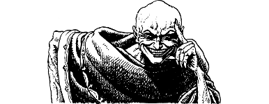

74
The crystal sphere is not an artefact of this world. It was forged in Dazganon, the dread fortress of the Dark God Naar, upon the ethereal Plane of Darkness. The supernatural forces that exist within this sphere enable Naar to exert total control over his agent Xaol. Your Kai senses inform you that the destruction of this sphere would deal a severe blow to the Dark God. It would rob him of a means by which his influence can prevail on Magnamund.
{kind=link}

Suddenly Xaol cries out in alarm, as if the evil necromancer has awoken from the grip of a nightmare. He snatches his hand away from the crystal sphere and points it at you accusingly. His dark eyes glare with madness when he spits out his chilling threat: ‘Foolish Kai. You are doomed. You and your weak master will never leave my hall alive!’
In the next instant, the doors to the necromancer’s hall crash shut and you are assailed by a terrible sound that fills your head with pain.
If you possess Kai-screen, turn to 164.
If you do not presses this Discipline, turn to 314.